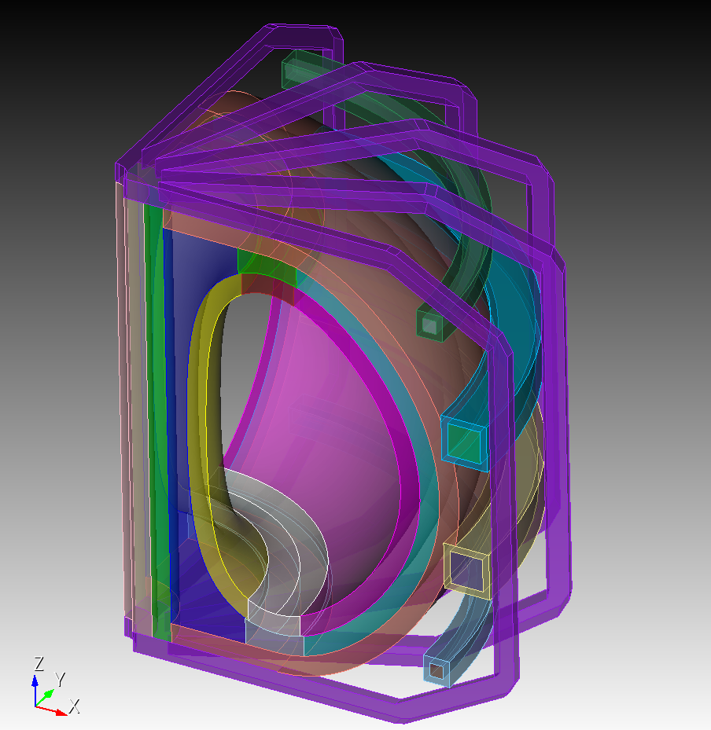

<h1 style="font-family: Roboto, sans-serif;">OpenMC Tallying Regression Test</h1>
<div class="modelDescription" style="display: flex; align-items: center;font-family: Roboto, sans-serif;">
<div style="flex: 1; padding-right: 10px;">
  This model was pulled from the OpenMC test suite to evaluate tally performance on unstructured meshes using XDG. Several elements of the mesh have been removed to ensure that tallying operations support exiting and re-entrant particles.
</div>

<div style="flex: 1;">

</div>

</div>
